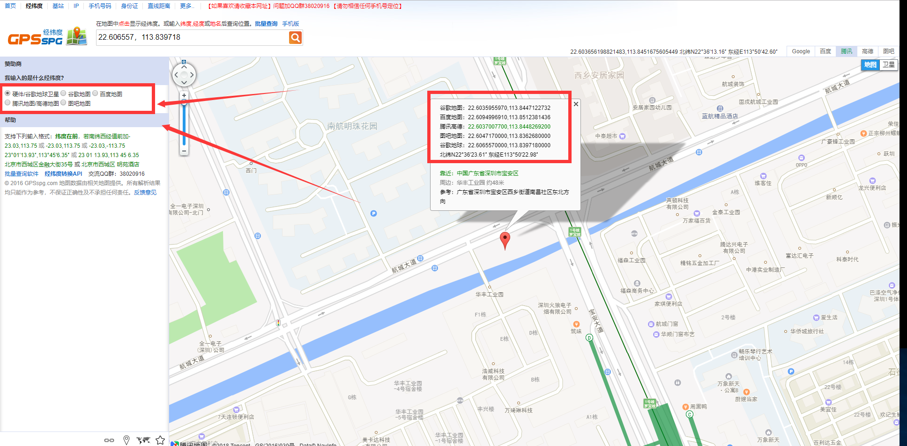

GPS
获取卫星定位信息，A9G模组内GPS芯片和GPRS芯片的串口2相连，故GPS启动后产生的信息会在串口2收到
例程：demo/gps
注意：在使用定位坐标显示到地图上时，注意坐标的转换，模组输出的位置是WGS84坐标，如果使用百度地图，需要转换成BD-09坐标，如果使用的腾讯地图、高德地图、google地图等，请先转换到GCJ-02坐标（火星坐标），否则显示结果可能会产生巨大误差
GPS输出的原始信息格式为NMEA标准，比如坐标(2236.3934,11350.3831)表示(22度36.3934分，113度50.3831分)，转换成度：(22.606557°，113.839718°)，此为WGS84坐标，然后复制到地图查看工具中即可看到在地图中的位置：

1. 函数
1.1. GPS_Open
bool GPS_Open(UART_Callback_t gpsReceivedCallback);
功能
开启GPS电源，GPS进入工作状态
参数
- gpsReceivedCallback：串口回调函数，如果设置为
NULL，则收到串口2收到GPS数据后不会产生回调，而是将GPS的数据以事件的方式发送给主任务；若不为NULL，则不会产生事件，设置的串口回调函数会被调用，不要在处理函数中消耗太多时间。建议使用事件的方式，参考GPS例程
返回值
- 是否成功打开GPS
1.2. GPS_Close
bool GPS_Close();
功能
关闭GPS电源
参数
无
返回值
是否成功关闭GPS